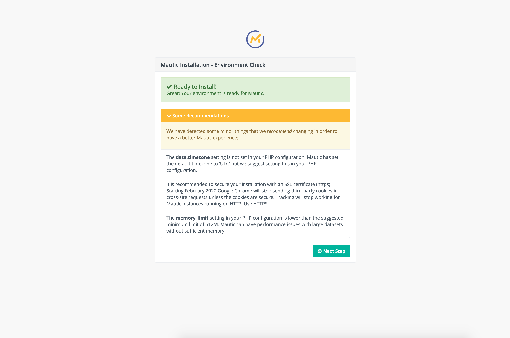
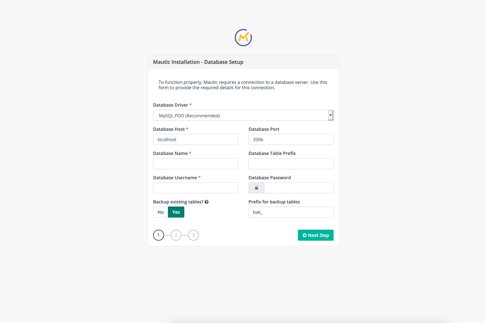
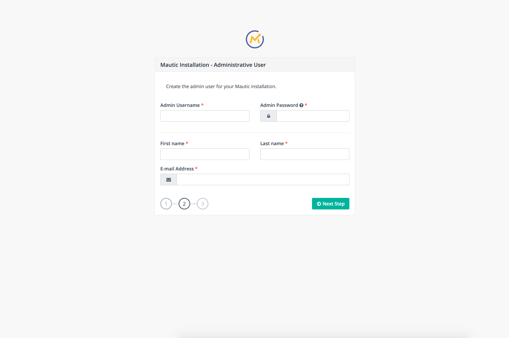
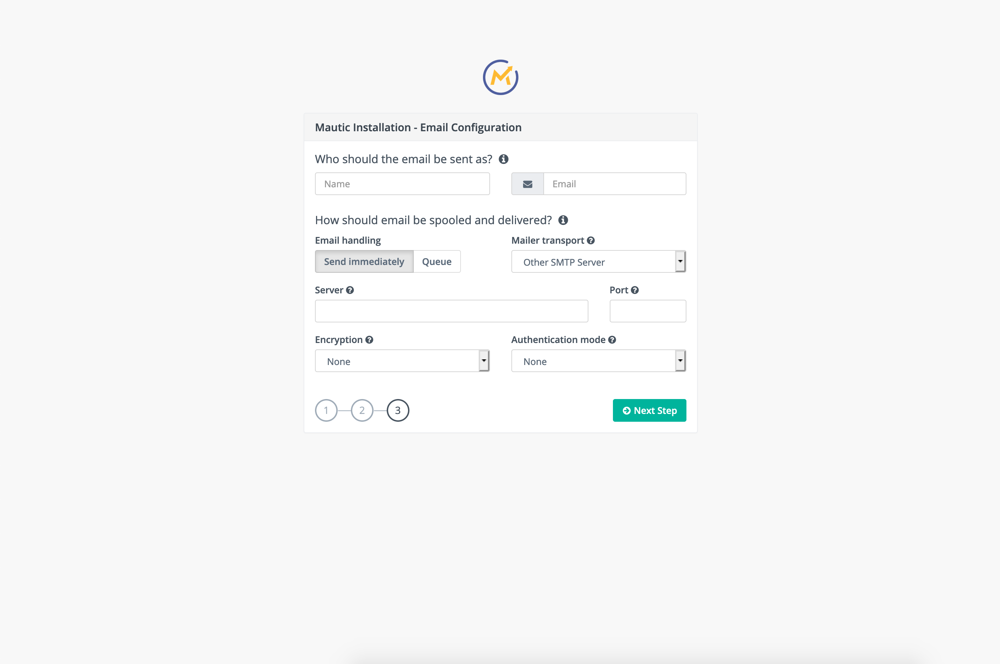

Mautic en AWS es una publicación para instalar el software que te permite automatizar el proceso de marketing de una organización en una EC2. En esta publicación voy a desplegar Mautic sobre un EC2 de AWS con la imagen de Ubuntu 18.04.
En primer lugar, se deberá instalar Nginx (servidor web), PHP (lenguaje de programación) y MySQL (base de datos), que son los necesarios para Mautic. También les colocaré los comandos y configuraciones necesarias para realizar el adecuado despliegue de Mautic.
Prerrequisitos y consideraciones
No se explicara cómo iniciar un EC2 en AWS, puedes consultar la documentación de AWS para tener mayor información. El tipo de instancia dependerá de las peticiones que se le harán a Mautic, para la explicación en esta publicacion se usó una t2.micro con la imagen Ubuntu 18.04 y disco duro (storage) de 8GB SSD (gp2).
Debes tener las credenciales necesarias para ingresar en el EC2 y saber un manejo básico de una consola Linux en Ubuntu 18.04
Instalando Nginx, PHP, Composer y MySQL
Estando dentro del EC2 en AWS, se deberán actualizar los paquetes que tenemos en el EC2
$ sudo apt updateDespués se deberá instalar Nginx, PHP y MySQL con
$ sudo apt install nginx php-fpm php-mysql php-curl \
php-xml mysql-server php-zip php-imap php-bcmath \
php-mbstring php-gd php-intlSe instalará composer para gestionar los paquetes de PHP en el proyecto Mautic
$ curl -sS https://getcomposer.org/installer -o composer-setup.php
$ sudo php composer-setup.php --install-dir=/usr/local/bin --filename=composerLos pasos anteriores fueron para instalar los requerimientos de Mautic, en las siguientes secciones se usaran o configuraran estos requerimientos.
Clonar el repositorio de Mautic e instalación de dependencias
Se clonara por git el repositorio de Mautic
$ git clone https://github.com/mautic/mautic.gitLuego se debe instalar las dependencias del proyecto Mautic con Composer (el manejador de dependencias de PHP) y crear los directorios de cache y logs para el proyecto
$ cd mautic
$ sudo -H composer self-update 1.10.17
$ composer install
$ mkdir app/cache app/logsAsignar los permisos necesarios al directorio que fue clonado
$ sudo chown -R www-data:www-data .
$ sudo find . -type d -not -perm 755 -exec chmod 755 {} +
$ sudo find . -type f -not -perm 644 -exec chmod 644 {} +
$ sudo chmod -R g+w app/cache/ app/logs/ app/config/
$ sudo chmod -R g+w media/files/ media/images/ translations/En esta sección se configuro Mautic en un directorio, en la siguiente sección se configurara la base de datos MySQL.
Base de Datos MySQL para Mautic
Se deberá crear la base de datos y un usuario en MySQL. Y con la instalación por defecto se prodrá ingresar a la base de datos
$ sudo mysqlDentro de MySQL se deberá ejecutar los siguientes comandos de base datos, para crear la base de datos y el usuario que se usará para Mautic
mysql> CREATE DATABASE mautic;
mysql> CREATE USER 'mautic'@'localhost' IDENTIFIED WITH mysql_native_password BY 'mautic';
mysql> GRANT ALL PRIVILEGES ON mautic.* TO 'mautic'@'localhost';
mysql> FLUSH PRIVILEGES;Ya se tiene creada la base de datos y un usuario para Mautic, en la siguiente sección se configurará Nginx para responder a las peticiones web.
Servidor Web Nginx para Mautic
El paso siguiente será configurar Nginx para procesar peticiones con PHP. Para esto se requiere crear un archivo de configuración /etc/nginx/sites-available/mautic con lo siguiente
server {
listen 80 default_server;
listen [::]:80 default_server;
root /home/ubuntu/mautic;
index index.php index.html index.htm index.nginx-debian.html;
server_name _;
location / {
try_files $uri $uri/ /index.php?$args;
}
location ~ \.php$ {
include snippets/fastcgi-php.conf;
fastcgi_pass unix:/run/php/php7.2-fpm.sock;
}
}Luego se debe borrar la configuración por defecto de Nginx, colocar la nueva configuración de Mautic para Nginx y recargar la instalación
$ sudo rm /etc/nginx/sites-enabled/default
$ sudo ln -s /etc/nginx/sites-available/mautic /etc/nginx/sites-enabled/
$ sudo nginx -s reloadEstas son las configuraciones básicas para el EC2. Se procede a iniciar la parte final de la instalación visitando la IP del sistema Mautic.
Configuración Mautic en AWS
Mautic en AWS ya se encuentra disponible, se necesita ir a la IP pública del servidor EC2 y terminar la instalación

Se coloca el nombre de usuario, contraseña y nombre de la base de datos. En la publicación se coloco “mautic” para el nombre de usuario, contraseña y base de datos

Indicamos el usuario, contraseña y correo electrónico a ser creado para administrar la aplicación

Se podría configurar la cuenta de correo electrónico para enviar los correos electrónicos en los procesos de marketing.

Llegamos al paso final, Mautic está completamente instalado en el EC2 de AWS con las configuraciones básicas. Procedemos a generar los trabajos programados para ejecutar Mautic en AWS
Las tareas programadas de Mautic
Se debe ejecutar diferentes tareas cada cierto tiempo en Mautic, por eso se procede a crear distintos registros en el crontab del Ubuntu
$ (sudo crontab -l 2>/dev/null; echo "0,15,30,45 * * * * php /home/ubuntu/mautic/bin/console mautic:segments:update") | sudo crontab -
$ (sudo crontab -l 2>/dev/null; echo "5,20,35,50 * * * * php /home/ubuntu/mautic/bin/console mautic:campaigns:update") | sudo crontab -
$ (sudo crontab -l 2>/dev/null; echo "10,25,40,55 * * * * php /home/ubuntu/mautic/bin/console mautic:campaigns:trigger") | sudo crontab -